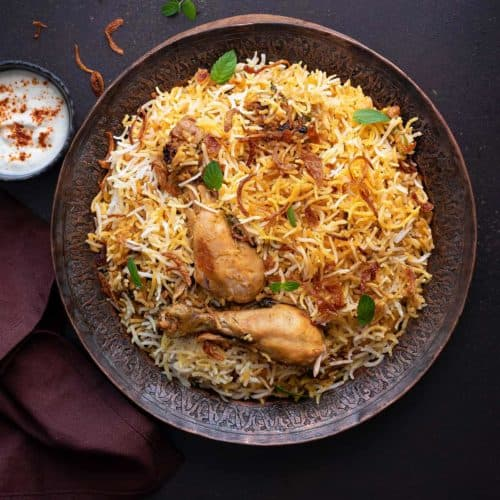
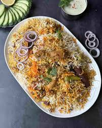
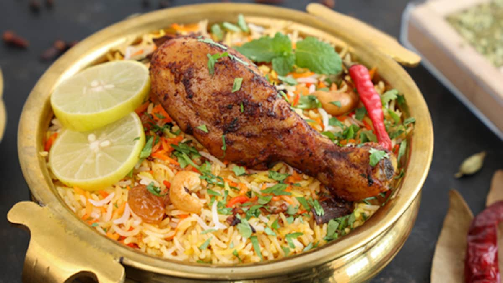

Ingredients | Steps | Serving Tips
 A very traditional and spicy biryani recipe
A very traditional and spicy biryani recipe
Ingredients:
- 1 kg chicken, cut into pieces
- 2 cups basmati rice
- 1 cup yogurt
- 2 onions, thinly sliced
- 2 tomatoes, chopped
- 4 cloves garlic, minced
- 1 inch ginger, grated
- 2 tsp red chili powder
- 1 tsp turmeric powder
- 1 tsp garam masala
- Salt to taste
- Fresh coriander leaves and mint for garnish
Steps to make Biryani:
- Soak basmati rice in water for 30 minutes, then drain.
- Heat oil in a large pot and fry sliced onions until golden brown. Remove half for garnish.
- Add garlic and ginger paste to the pot and sauté for a minute.
- Add chicken, tomatoes, yogurt, and spices. Cook until chicken is partially done.
- Add fresh herbs and sprinkle fried onions back on top.
- Boil rice in a separate pot until 70% done, then drain.
- Layer rice over the chicken, cover tightly, and steam (Dum) on low heat for 20–25 minutes.
- Let it rest for 5 minutes, then fluff and serve.
Serving Tips:
Serve Biryani piping hot with chilled raita or a fresh kachumber salad.


